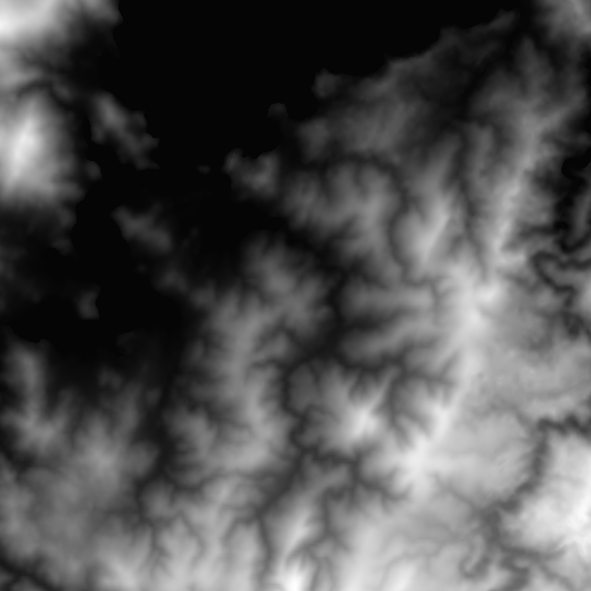
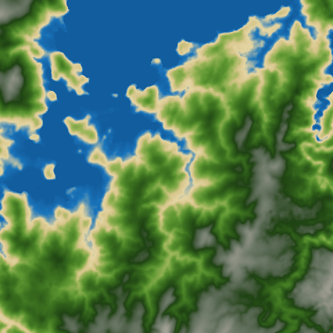

Textures
Textures are fundamental components in Raftel Engine that allow you to add visual detail and realism to 3D objects. They provide a way to map 2D images onto 3D surfaces, creating the appearance of complex materials and surfaces without needing to model every detail in geometry.
Key Features
- Support for common image formats (PNG, JPG, BMP, TGA, etc.)
- 2D textures for standard surface mapping
- Cubemap textures for environment mapping and skyboxes
- Automatic mipmap generation for optimized rendering at different distances
- Error handling and resource management with shared pointers
- Built on top of stb_image for versatile image loading
Architecture Overview
The texture system in Raftel Engine consists of two primary classes:
TextureImage Class
The TextureImage class serves as a container for raw image data loaded from files. It stores:
- Raw pixel data
- Width and height dimensions
- Number of color channels
This class is primarily used as an intermediate representation before creating OpenGL textures. It handles the memory management of the loaded image data.
Texture Class
The Texture class wraps the OpenGL texture object, providing:
- Methods for creating and managing OpenGL textures
- Support for 2D textures and cubemaps
- Functions to bind textures to shader samplers
- Static methods for loading textures from files
This class is the primary interface for working with textures in Raftel Engine.
namespace Raftel {
class TextureImage {
public:
unsigned char* data; // Raw image data
int width; // Image width
int height; // Image height
int n_channel; // Number of channels (3=RGB, 4=RGBA)
// Methods for construction and memory management
// ...
};
enum class TextureType {
TEXTURE_2D, // Standard 2D texture
CUBEMAP // Cube map texture for environment mapping
};
class Texture {
public:
GLuint id; // OpenGL texture ID
TextureType type; // Type of texture (2D or Cubemap)
// Methods for loading, binding, and managing textures
// ...
static std::shared_ptr loadTexture(const std::string& path);
static std::shared_ptr loadCubemap(const std::vector& faces);
void bind(int unit) const;
};
} Basic Usage
Here are some common examples of how to use the Texture system in Raftel Engine:
Loading a 2D Texture
#include "raftel/texture.hpp"
#include "raftel/material.hpp"
int main() {
try {
// Load a texture from a file
auto brickTexture = Raftel::Texture::loadTexture("assets/textures/brick.png");
// Create a material and apply the texture
auto material = std::make_shared();
material->setAlbedo(brickTexture);
// The texture will be used when rendering objects with this material
myMesh->setMaterial(material);
// ...
} catch (const std::exception& e) {
std::cerr << "Error loading texture: " << e.what() << std::endl;
}
return 0;
} Creating a Skybox with Cubemap
#include "raftel/texture.hpp"
#include "raftel/shader.hpp"
void setupSkybox() {
// Define paths to the six faces of the cubemap
std::vector skyboxFaces = {
"assets/skybox/right.jpg", // +X
"assets/skybox/left.jpg", // -X
"assets/skybox/top.jpg", // +Y
"assets/skybox/bottom.jpg", // -Y
"assets/skybox/front.jpg", // +Z
"assets/skybox/back.jpg" // -Z
};
// Load the cubemap texture
auto skyboxTexture = Raftel::Texture::loadCubemap(skyboxFaces);
// Use the cubemap in a shader
skyboxShader->use();
skyboxTexture->bind(0);
skyboxShader->setUniform("skybox", 0);
// Render skybox...
} TextureImage Class Reference
Attributes
A pointer to the raw image data in memory. The format depends on the number of channels (RGB or RGBA).
The width of the image in pixels.
The height of the image in pixels.
The number of color channels in the image (3 for RGB, 4 for RGBA).
Constructor and Destructor
Constructs a TextureImage with the provided image data and dimensions.
Parameters:
data- The raw image datawidth- The width of the image in pixelsheight- The height of the image in pixelsn_channel- The number of color channels (3 for RGB, 4 for RGBA)
Destructor that frees the image data using stbi_image_free().
Move Operations
Move constructor that transfers ownership of image data from another TextureImage.
Parameters:
other- The TextureImage to move from
Move assignment operator that transfers ownership of image data.
Parameters:
other- The TextureImage to move from
Returns: A reference to this TextureImage
TextureType Enumeration
Defines the different types of textures supported by Raftel Engine.
Values:
TEXTURE_2D- Standard 2D texture used for most surface mappingCUBEMAP- Cubemap texture used for skyboxes and environment mapping
Texture Class Reference
Attributes
The OpenGL texture ID assigned to this texture.
The type of texture (TEXTURE_2D or CUBEMAP).
Constructors and Destructor
Default constructor that initializes the texture ID to 0 and type to TEXTURE_2D.
Constructor that creates an OpenGL texture from a TextureImage. This generates mipmaps automatically.
Parameters:
image- The TextureImage containing the raw image data
Constructor that creates a cubemap texture from six image files.
Parameters:
faces- A vector containing the file paths of the six cubemap faces in order: right (+X), left (-X), top (+Y), bottom (-Y), front (+Z), back (-Z)
Throws: std::runtime_error if any face fails to load or if fewer than 6 faces are provided
Destructor that deletes the OpenGL texture.
Static Factory Methods
Static factory method to load a 2D texture from a file.
Parameters:
texturePath- The file path to the texture image
Returns: A shared pointer to the loaded Texture
Throws: std::runtime_error if the texture fails to load
Static factory method to load a cubemap texture from six image files.
Parameters:
faces- A vector containing the file paths of the six cubemap faces
Returns: A shared pointer to the loaded cubemap Texture
Throws: std::runtime_error if any face fails to load or if fewer than 6 faces are provided
Static method to load raw image data from a file.
Parameters:
path- The file path to the image
Returns: A TextureImage containing the loaded image data
Throws: std::runtime_error if the image fails to load
Instance Methods
Binds this texture to the specified texture unit for use in shaders.
Parameters:
unit- The texture unit to bind to (0, 1, 2, etc.)
Gets the OpenGL texture ID.
Returns: The OpenGL texture ID
Gets the last error message from texture operations.
Returns: The last error message
Move Operations
Move constructor that transfers ownership of the OpenGL texture.
Parameters:
other- The Texture to move from
Move assignment operator that transfers ownership of the OpenGL texture.
Parameters:
other- The Texture to move from
Returns: A reference to this Texture
Supported Image Formats
Raftel Engine uses the stb_image library to load textures, which supports most common image formats:
PNG (.png)
Supports full transparency and lossless compression. Ideal for textures with sharp edges, text, or transparency.
JPEG (.jpg, .jpeg)
Provides smaller file sizes with lossy compression. Good for photo-realistic textures without transparency.
BMP (.bmp)
Uncompressed bitmap format. Simple but produces larger files with no compression artifacts.
TGA (.tga)
Supports alpha channels and is common in game development. Good for textures requiring transparency.
PSD (.psd)
Adobe Photoshop format. Only the flattened image is imported.
HDR (.hdr)
High Dynamic Range format for environment maps and lighting scenarios requiring a wider color range.
Texture Parameters and Settings
When creating textures, Raftel Engine applies default OpenGL texture parameters to control filtering, wrapping, and other behaviors. These defaults are:
// For 2D textures:
glTexParameteri(GL_TEXTURE_2D, GL_TEXTURE_WRAP_S, GL_REPEAT);
glTexParameteri(GL_TEXTURE_2D, GL_TEXTURE_WRAP_T, GL_REPEAT);
glTexParameteri(GL_TEXTURE_2D, GL_TEXTURE_MIN_FILTER, GL_LINEAR_MIPMAP_LINEAR);
glTexParameteri(GL_TEXTURE_2D, GL_TEXTURE_MAG_FILTER, GL_LINEAR);
// For cubemaps:
glTexParameteri(GL_TEXTURE_CUBE_MAP, GL_TEXTURE_MIN_FILTER, GL_LINEAR);
glTexParameteri(GL_TEXTURE_CUBE_MAP, GL_TEXTURE_MAG_FILTER, GL_LINEAR);
glTexParameteri(GL_TEXTURE_CUBE_MAP, GL_TEXTURE_WRAP_S, GL_CLAMP_TO_EDGE);
glTexParameteri(GL_TEXTURE_CUBE_MAP, GL_TEXTURE_WRAP_T, GL_CLAMP_TO_EDGE);
glTexParameteri(GL_TEXTURE_CUBE_MAP, GL_TEXTURE_WRAP_R, GL_CLAMP_TO_EDGE);Parameter Explanations
- Wrap Mode - Controls what happens when texture coordinates go outside the [0,1] range:
GL_REPEAT- Repeats the texture (default for 2D textures)GL_CLAMP_TO_EDGE- Clamps to the edge (default for cubemaps)
- Filtering - Controls how textures are sampled:
GL_LINEAR- Bilinear filtering for smooth resultsGL_LINEAR_MIPMAP_LINEAR- Trilinear filtering with mipmaps for distance rendering
Using Textures with Materials and Shaders
Textures are most commonly used as part of material definitions. Here's how to use textures with materials and shaders in Raftel Engine:
#include "raftel/texture.hpp"
#include "raftel/material.hpp"
#include "raftel/shader.hpp"
#include "raftel/mesh.hpp"
void setupTexturedObject() {
// 1. Load textures
auto diffuseMap = Raftel::Texture::loadTexture("assets/textures/stone_diffuse.png");
auto normalMap = Raftel::Texture::loadTexture("assets/textures/stone_normal.png");
auto roughnessMap = Raftel::Texture::loadTexture("assets/textures/stone_roughness.png");
// 2. Create material with textures
auto material = std::make_shared();
material->setAlbedo(diffuseMap);
material->setNormal(normalMap);
material->setRoughness(roughnessMap);
// 3. Apply material to mesh
auto mesh = Raftel::MeshFactory::createCube(1.0f);
mesh->setMaterial(material);
// 4. Render in your main loop
auto shader = Raftel::ShaderProgram::Create("shaders/pbr.vert", "shaders/pbr.frag");
// ... in render loop
shader->use();
// The material system will automatically:
// - Bind textures to appropriate texture units
// - Set uniforms in the shader for texture samplers
// - Set flags for which textures are available
mesh->draw(*shader);
}
// In your fragment shader:
// uniform sampler2D albedoMap;
// uniform sampler2D normalMap;
// uniform sampler2D roughnessMap;
// uniform int hasAlbedoMap;
// uniform int hasNormalMap;
// uniform int hasRoughnessMap;
//
// void main() {
// vec3 albedo = hasAlbedoMap == 1 ? texture(albedoMap, texCoord).rgb : albedoColor;
// vec3 normal = hasNormalMap == 1 ? perturbNormal() : normalVector;
// float roughness = hasRoughnessMap == 1 ? texture(roughnessMap, texCoord).r : roughnessValue;
//
// // Continue with PBR calculations...
// } Creating and Using Cubemaps for Skyboxes
Cubemaps are a special type of texture consisting of six faces arranged in a cube configuration. They are commonly used for skyboxes, environment maps, and reflections. Here's how to create and use a skybox with cubemaps in Raftel Engine:
// 1. Load the cubemap texture
std::vector skyboxFaces = {
"assets/skybox/right.jpg", // +X
"assets/skybox/left.jpg", // -X
"assets/skybox/top.jpg", // +Y
"assets/skybox/bottom.jpg", // -Y
"assets/skybox/front.jpg", // +Z
"assets/skybox/back.jpg" // -Z
};
auto skyboxTexture = Raftel::Texture::loadCubemap(skyboxFaces);
//2. Initialize Render System and Set SkyBox
Raftel::RenderSystem::Initialize();
Raftel::RenderSystem::SetSkyboxTexture(skyboxTexture);
// 3. Render in your render loop
void renderSkybox(Camera& camera) {
[...code]
Raftel::RenderSystem::UpdateRenderSystem(...);
}
// 4. Shutdown Render System
Raftel::RenderSystem::Shutdown();
Advanced Texture Techniques
Procedural Textures
Instead of loading textures from files, you can generate textures procedurally for effects like noise patterns, gradients, or other algorithmic textures:
// Create a procedural checkerboard texture
std::shared_ptr createCheckerboardTexture(int width = 256, int height = 256) {
// Create image data
unsigned char* data = new unsigned char[width * height * 4]; // RGBA
// Generate checkerboard pattern
for (int y = 0; y < height; y++) {
for (int x = 0; x < width; x++) {
int index = (y * width + x) * 4;
// Create a checkerboard pattern
bool isWhite = ((x / 32) + (y / 32)) % 2 == 0;
data[index + 0] = isWhite ? 255 : 64; // R
data[index + 1] = isWhite ? 255 : 64; // G
data[index + 2] = isWhite ? 255 : 64; // B
data[index + 3] = 255; // A (fully opaque)
}
}
// Create a TextureImage with our data
Raftel::TextureImage image(data, width, height, 4);
// Don't delete 'data' - TextureImage takes ownership of it
// Create and return the texture
return std::make_shared(std::move(image));
} Terrain Texture Generator Tool
Raftel Engine includes a Python-based utility for generating terrain textures from heightmaps. This tool allows you to quickly create color-mapped textures that represent different terrain features based on elevation data.
Key Features
- Convert grayscale heightmaps (8bpp) to colored terrain textures
- Multiple pre-defined color schemes for different biomes
- Customizable color gradients
- Support for various terrain types: tropical, desert, volcanic, tundra, and more
Location
The tool is located in the /tools/ directory of the Raftel Engine project.
Usage
To use the terrain texture generator:
- Open the
generate_terrain_texture.pyfile - Update the path to your heightmap file:
heightmap_image = Image.open('PATH_TO_YOUR_HEIGHTMAP.png').convert('L') - Set the output path for the generated texture:
output_path = 'PATH_TO_OUTPUT/texture_name.png' - Optionally, select or customize a color map (see examples below)
- Run the script:
python generate_terrain_texture.py
from PIL import Image
import numpy as np
import matplotlib.pyplot as plt
from matplotlib.colors import LinearSegmentedColormap
# Load heightmap image
heightmap_image = Image.open('../assets/heightmap/my_terrain.png').convert('L')
heightmap = np.array(heightmap_image)
# Normalize the heightmap array to float values between 0 and 1
heightmap_normalized = heightmap / 255.0
# Select a colormap (tropical terrain in this example)
cmap = LinearSegmentedColormap.from_list(
"TropicalCmap",
[
(0.0, "#0D4F8B"), # Deep water (dark blue)
(0.05, "#1A75BB"), # Shallow water
(0.1, "#E4D5A3"), # Beach
(0.15, "#D6C58A"), # Sand/earth
(0.2, "#9CB65A"), # Coastal vegetation
(0.3, "#5E9732"), # Low tropical vegetation
(0.4, "#3F7521"), # Medium tropical vegetation
(0.5, "#2E5C1A"), # Low jungle
(0.6, "#1F4213"), # Dense jungle
(0.7, "#50624A"), # Vegetated hills
(0.8, "#6B7866"), # Rocky hills
(0.9, "#878C7E"), # Low mountains
(1.0, "#A4A296") # Mountain peaks
]
)
# Apply the colormap to the image
fig, ax = plt.subplots()
ax.imshow(heightmap_normalized, cmap=cmap, interpolation='nearest')
plt.axis('off') # Disable axes
plt.subplots_adjust(left=0, right=1, top=1, bottom=0) # Adjust margin to maximize the image on canvas
# Set output path
output_path = '../assets/textures/terrain_texture.png'
plt.savefig(output_path, bbox_inches='tight', pad_inches=0)
plt.show()Available Color Maps
The tool includes several predefined color maps for different terrain types. You can select one by changing the colormap definition:
Tropical
Green and lush vegetation with blue water and sandy beaches. Ideal for jungle or tropical island terrain.
Coastal Cliffs
Rocky coastal terrain with dramatic cliff formations, featuring earthy tones and blue waters.
Snowy Mountains
Forest transitioning to rocky terrain and snow-capped peaks at higher elevations.
Desert
Arid landscape with sand dunes and rocky outcroppings in warm earth tones.
Volcanic
Dark volcanic rock with flowing lava and burnt earth, using dark grays and bright reds.
Tundra
Cold northern landscape with sparse vegetation and dark rocky peaks.
# Coastal Cliffs Colormap
cmap = LinearSegmentedColormap.from_list(
"CustomCmap",
[
(0.0, "#0D4F8B"), # Deep water (dark blue)
(0.05, "#D1B36C"), # Shallow water - last water zone
(0.1, "#D1B36C"), # Start of land/coastal sand
(0.15, "#B39B65"), # Coastal sand/earth
(0.25, "#8E7F50"), # Low land/cliff base
(0.35, "#6E6A53"), # Start of cliff rock
(0.45, "#5D5D54"), # Main cliff rock
(0.6, "#7A7A74"), # Exposed rock/mid cliff zone
(0.75, "#9A9A94"), # Upper cliff rock
(0.85, "#BAB6A7"), # Cliff top
(0.95, "#D5D1C2"), # Highest areas
(1.0, "#E9E6DA") # Highest rocky peaks
]
)
# Snowy Mountains Colormap
cmap = LinearSegmentedColormap.from_list(
"MontañanevadaCmap",
[
(0.0, "#0D4F8B"), # Deep water (dark blue)
(0.05, "#1A75BB"), # Shallow water
(0.1, "#3A623F"), # Low vegetation/forest
(0.2, "#5A7E50"), # Dense forest
(0.3, "#76876A"), # Forest limit
(0.4, "#938B74"), # Transition zone
(0.5, "#A99D88"), # Low rock
(0.6, "#BEB8AA"), # Exposed rock
(0.7, "#D1CDC6"), # Transition to snow
(0.8, "#E3E2DF"), # Partial snow
(0.9, "#F0F0F0"), # Heavy snow
(1.0, "#FFFFFF") # Snowy peaks
]
)
# Desert Colormap
cmap = LinearSegmentedColormap.from_list(
"DesiertoCmap",
[
(0.0, "#0D4F8B"), # Deep water (dark blue)
(0.05, "#1A75BB"), # Shallow water
(0.1, "#E7C99F"), # Wet sand/shore
(0.2, "#E6C188"), # Golden sand
(0.3, "#D9B678"), # Low dunes
(0.4, "#CCAA6A"), # Medium dunes
(0.5, "#BF9958"), # High dunes
(0.6, "#AD8242"), # Low rocky terrain
(0.7, "#96703C"), # Rocky terrain
(0.8, "#7C5A32"), # High rocks
(0.9, "#634628"), # Plateaus
(1.0, "#4A321E") # Rocky peaks
]
)
# Volcanic Colormap
cmap = LinearSegmentedColormap.from_list(
"VolcánicoCmap",
[
(0.0, "#0D4F8B"), # Deep water (dark blue)
(0.05, "#1A75BB"), # Shallow water
(0.1, "#2E2E2E"), # Black volcanic rock
(0.2, "#3A3A3A"), # Volcanic rock
(0.3, "#474747"), # Low rocks
(0.4, "#5A5A5A"), # Volcanic slope
(0.5, "#707070"), # Mid volcanic rock
(0.6, "#8A6F55"), # Transition to burnt earth
(0.7, "#A85A3A"), # Burnt earth
(0.8, "#C14B28"), # Hot zone
(0.9, "#E33E14"), # Surface magma
(1.0, "#FF3300") # Crater/lava
]
)
# Tundra Colormap
cmap = LinearSegmentedColormap.from_list(
"TundraCmap",
[
(0.0, "#0D4F8B"), # Deep water (dark blue)
(0.05, "#1A75BB"), # Shallow water
(0.1, "#C9D2D0"), # Ice/melting snow
(0.2, "#B8C3C1"), # Ice-land transition
(0.3, "#9BA7A0"), # Rocky tundra
(0.4, "#7C8980"), # Tundra with moss
(0.5, "#5E6C62"), # Low tundra vegetation
(0.6, "#485548"), # Resistant vegetation
(0.7, "#38473D"), # Tundra hills
(0.8, "#2C3C34"), # Low mountains
(0.9, "#212F29"), # Medium mountains
(1.0, "#19231F") # Dark mountain peaks
]
)Customizing Color Maps
You can create your own custom color maps by defining a list of color stops. Each stop consists of:
- A position value between 0.0 (lowest elevation) and 1.0 (highest elevation)
- A color in hexadecimal format (#RRGGBB)
This allows you to create terrain textures for any biome or artistic style you need for your game or visualization.
Example Results
Here's an example of a heightmap and the resulting terrain texture generated with the tool:
Input: Heightmap
Grayscale heightmap image (8-bit).
Output: Generated Texture
The resulting colored terrain texture.
Running the Tool
After configuring the heightmap path, output path, and selecting/customizing your color map, run the tool using Python:
python generate_terrain_texture.pyIf the script executes successfully, you'll see the generated texture displayed in a matplotlib window, and the texture file will be saved to your specified output path.
Related Topics
Materials
Learn about the material system that uses textures to define surface properties.
Shaders
Understand how to use textures in GLSL shader programs.
Loading 3D Meshes
Tutorial on loading meshes with UV coordinates for texturing.
Render System
Advanced techniques using textures for screen-space effects.